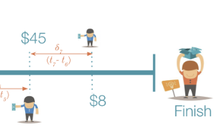
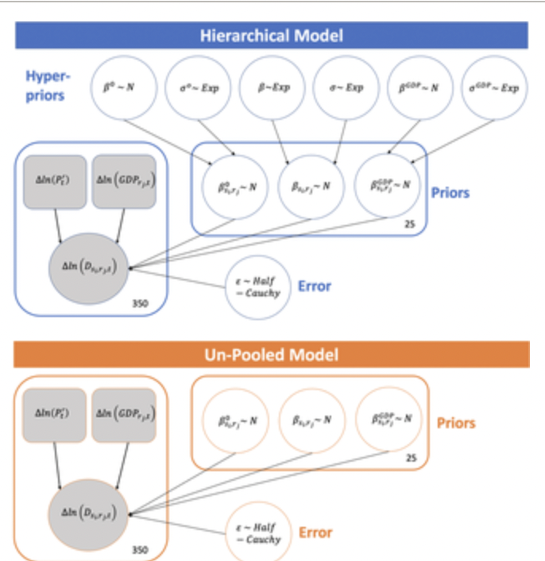
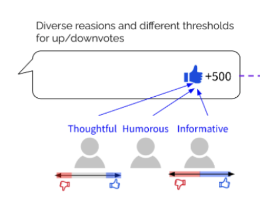
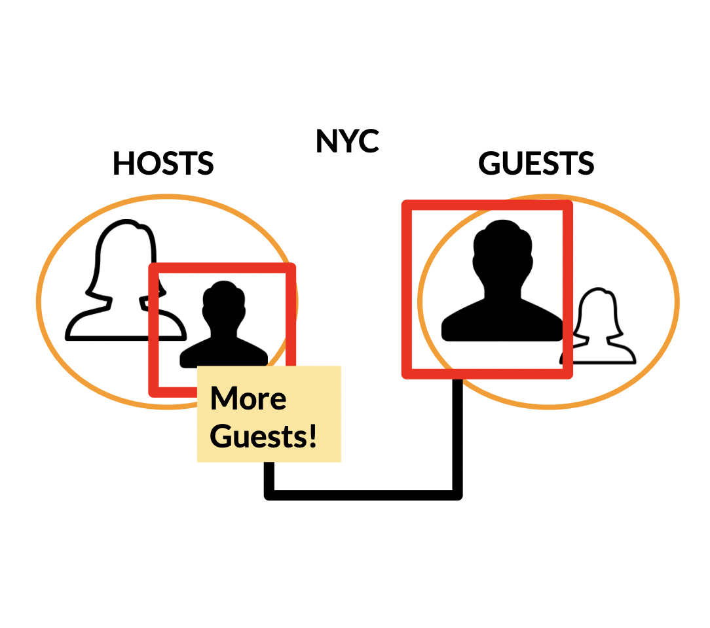

|
Research
I’ve been thinking about both features of, and interpersonal processes in, human social interactions that enable cooperation like norm acquisition and compliance. I am also interested in the opportunities and risks that may arise at different levels (individuals, communities, society) when we try to instill normativity into (interactive) algorithmic systems. Better understanding and modeling of psychological processes could inform the design and governance of these systems such that they align with human values.
|
|

|
Hidden Influences of Crowd Behavior in Crowdfunding: An Experimental Study
Henry K. Dambanemuya,
Eunseo Choi,
Darren Gergle,
Emőke-Ágnes Horvát
(Submitted to the ACM Transactions on Computer-Human Interaction (TOCHI))
International Conference on Computational Social Science (IC2S2), 2022
[
Preprint
]
|
|

|
A hierarchical Bayesian regression model that reduces uncertainty in material demand predictions
Karan Bhuwalka,
Eunseo Choi,
Elizabeth A. Moore,
Richard Roth,
Randolph E. Kirchain,
Elsa Olivetti
Journal of Industrial Ecology, 2022
[
Paper
]
|
|

|
Capturing Diverse and Precise Reactions to a Comment with User-Generated Labels
Eunyoung Ko*,
Eunseo Choi*,
Jeongwoo Jang,
Juho Kim
ACM Web Conference (formerly WWW), 2022
[
Paper /
Project Page
]
|
|

|
Airbnb’s Reputation System and Gender Differences Among Guests: Evidence from Large-Scale Data Analysis and a Controlled Experiment
Eunseo Choi,
Emőke-Ágnes Horvát
International Conference on Social Informatics, 2019
[
Paper
]
|
|
|
Policy Recommendations for
Regulating the Use of AI for
Decision-making in Insurance
Eunseo Choi*,
Jason Yang*,
Muhua Xu*,
David Edelman (advisor),
Hal Abelson (advisor)
Term Paper for Foundations of Information Policy (@MIT IPRI)
Selected as Exemplary Paper in 2021
[
Non-Archival Policy Paper ]
|
Template from this website.
|
{kind=link}